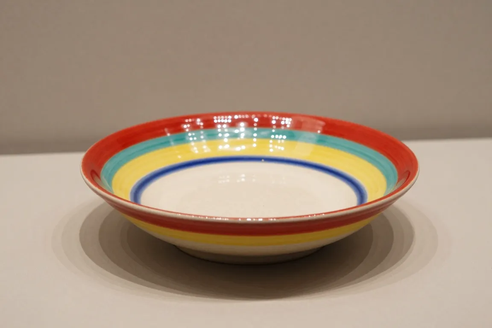

керамика · 1936–1973 · также: Американская однотонная посуда, Цветная посуда в любом сочетании, Fiesta
Однотонная столовая посуда для американского дома. Круглая форма ар-деко с концентрическими кольцами глазуруется одним насыщенным цветом, а покупатель смешивает цвета в открытой продаже. Первая красная глазурь содержала уран.

Главная идея
Одна простая форма с кольцами в наборе насыщенных цветов глазури позволяет каждому покупателю собрать свой стол по одной вещи.
Принципы дизайна
Берите одно семейство форм с концентрическими кольцами в рельефе на борту и поддоне.
Глазуруйте каждую вещь одним сплошным цветом и предлагайте 5 и более цветов в первый год.
Продавайте линию свободным набором: каждая вещь продаётся отдельно, а покупатель выбирает цвет.
Делайте глазурь толстой и полунепрозрачной, чтобы цвет закрывал черепок.
Обжигайте красную глазурь с оксидом урана, чтобы получить оранжево-красный.
Оставляйте дно неглазурованным кольцом там, где вещь стояла в печи.
Время от времени добавляйте новый цвет, чтобы линия оставалась новой.